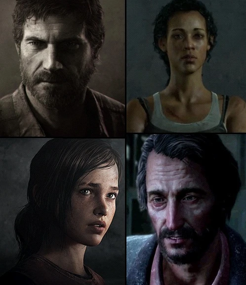

содержание
Персонажи
Персонажи

Персонажи — действующие лица в Одни из нас и Одни из нас II, включая главных героев,
которых можно встретить, о которых можно прочитать или услышать по ходу событий сюжетной
кампании.
Список персонажей в Одни из нас
Главные герои
- Джоэл — главный герой, контрабандист из Бостона.
- Элли — главная героиня, 14-летняя девочка, обладающая иммунитетом от заражения.
Второстепенные персонажи
- Сара — дочь Джоэла, погибшая в начале эпидемии КЦИ.
- Томми — брат Джоэла. Поселился на ГЭС в округе Джексон, женат на лидере местной общины.
- Тесс — партнер Джоэла, контрабандистка из Бостона.
- Марлин — лидер «Цикад».
- Дэвид — лидер общины каннибалов в Сильвер-Лэйк.
- Билл — партнер Джоэла и Тесс, единственный обитатель городка Линкольн.
- Сэм — младший брат Генри, бывший житель КЗ «Хартфорд».
- Генри — старший брат Сэма, бывший житель КЗ «Хартфорд».
- Роберт — контрабандист из Бостона, торговец оружием.
- Джеймс — правая рука Дэвида.
- Мария — лидер общины в округе Джексон. Супруга Томми.
- Райли — лучшая подруга Элли, обучавшаяся в военной школе-интернате Бостона.
- Итан — «Цикада».
- Уинстон — военный, владелец лошади Принцессы.
- Иш — лидер общины в пригороде Питтсбурга.
Заражённые
- Бегун — первая стадия заражения людей. Лучше остальных видов напоминают людей. Представляют опасность лишь в большом количестве.
- Сталкер — вторая стадия заражения. Скрываются в тени и нападают неожиданно.
- Щелкун — третья и более опасная стадия. Полностью лишены зрения, но обладают отличной эхолокацией. Убивают с первого удара. голова защищена наростами грибка.
- Топляки — самые опасные зараженные. Большие, мощные и хорошо защищённые, топляки являются опасным противником.
Фракции
- «Цикады» — группа террористов-революционеров, последние, кто продолжают поиски лекарства от грибка.
- Военные — стражи карантинных зон, подчинены FEDRA.
- Охотники — организованная преступная группировка, расположенная в Питтсбурге и его окрестностях.
- Бандиты — обычные грабители и убийцы. В игре представлена организация, расположившаяся неподалёку от Джексона, Вайоминг.
- Каннибалы — группа людоедов, ведомая Дэвидом.
Список персонажей в Одни из нас 2
Главные герои
- Эбби — бывшая «Цикада», одновременно протагонист и антагонист.
- Элли — главная героиня, 14-летняя девочка, обладающая иммунитетом от заражения.
Второстепенные персонажи
- Джоэл — бывший контрабандист, проживает в Джексоне c Элли.
- Томми — младший брат Джоэла, муж Марии.
- Дина — подруга Элли, а также её девушка.
- Джесси — общий друг Элли и Дины.
- Мария — жена Томми, лидер общины Джексона.
- Оуэн — участник «ВОФ», бывший парень Эбби, в отношениях с Мэл.
- Мэл — медик и участница «ВОФ», беременна от Оуэна.
- Мэнни — участник «ВОФ», друг и сожитель Эбби.
- Яра — изгнанный серафит, старшая сестра Льва.
- Лев — изгнанный серафит, младший брат Яры.
- Айзек — лидер «ВОФ».
- Эмили — лидер отрядов серафитов.
- Нора — врач в ВОФ.
- Кэт — бывшая девушка Элли
- Талья — старшая сестра Дины.
- Лия — участница «ВОФ», любовный интерес Джордана
Заражённые
- Бегун — первая стадия заражения людей. Лучше остальных видов напоминают людей. Представляют опасность лишь в большом количестве.
- Сталкер — вторая стадия заражения. Скрываются в тени и нападают неожиданно.
- Щелкун — третья и более опасная стадия. Полностью лишены зрения, но обладают отличной эхолокацией. Убивают с первого удара. голова защищена наростами грибка.
- Топляки — самые опасные зараженные. Большие, мощные и хорошо защищённые, топляки являются опасным противником.
- Шаркун — некая помесь бегуна и щелкуна. Также умеет выпускать ядовитый газ. (он слабее чем Топляк)
- Крысиный Король — самый опасный зараженный на данный момент.
Фракции
- Патруль Джексона
- «Серафиты»
- «Вашингтонский освободительный фронт»
- «Гремучники»